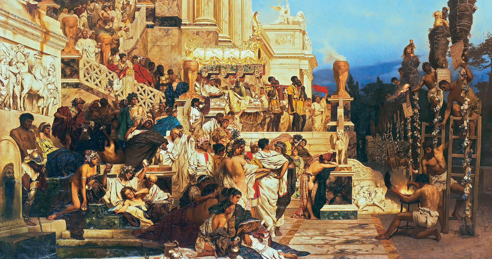
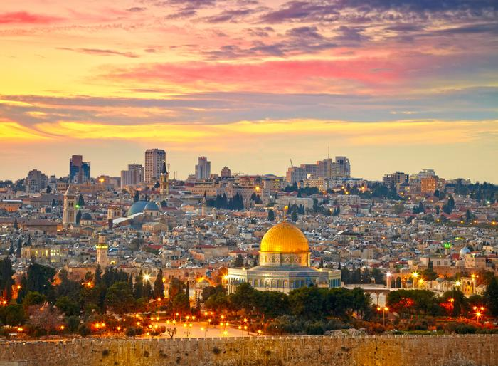
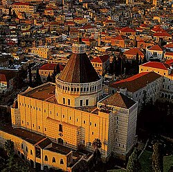
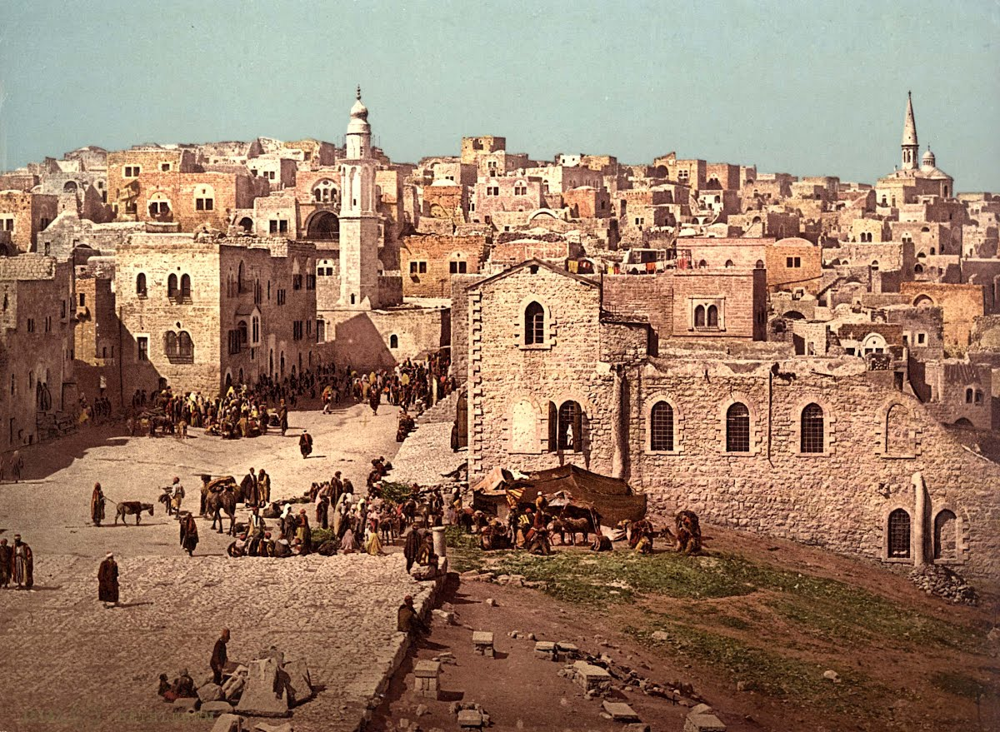

Miejsca święte chrześcijaństwa
Najważniejsze miejsca święte
- Jerozolima – miejsce śmierci i zmartwychwstania Jezusa, najświętsze miasto chrześcijan.
- Betlejem – miasto narodzin Jezusa Chrystusa, symbol początku zbawienia.
- Nazaret - miejsce dzieciństwa Jezusa i zwiastowania Maryi.
- Rzym – miasto, w którym zginęli apostołowie Piotr i Paweł, symbol siły i trwania Kościoła chrześcijańskiego.



